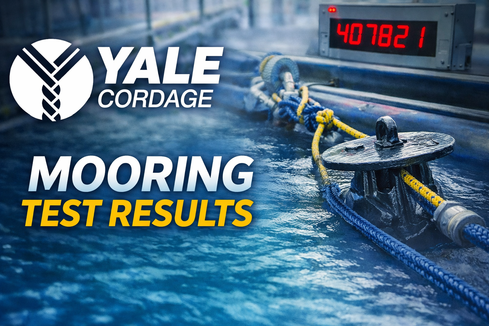

Inside the Yale Cordage tensile test
How we set up a 100-foot pull, what failure looked like for both anchors, and what surprised us in the data.
Read more →Design notes, test results, stories from the boats and harbors that shape what we build. New posts when they're worth your time.

How we set up a 100-foot pull, what failure looked like for both anchors, and what surprised us in the data.
Read more →
The geometry behind the cone, why three bars is the right answer, and why we tested every reasonable alternative.
Read more →
Setting two anchors, watching the bedding-in process, and pulling them with a lobster boat at 3:1 scope.
Read more →
The math behind unpredictable chain wraps and how a chain-wrap-proof field changes the harbormaster's job.
Read more →
A walk through the shop where MoorSafe anchors are welded, finished, and inspected before they ship.
Read more →
How the standard for a "working anchor" was set by a captain who knew exactly what working meant.
Read more →